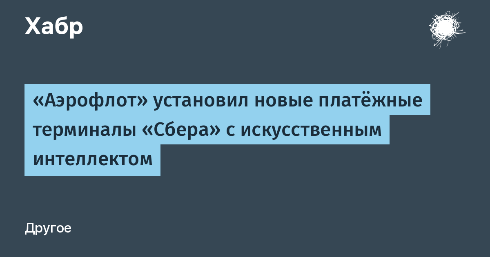

Первый в России терминал «НЕО» установлен во флагманском офисе «Аэрофлота», устройства работают во всех 22 окнах обслуживания — через них пассажиры оплачивают билеты и дополнительные услуги. По задумке разработчика, в одном корпусе соединили искусственный интеллект, биометрию, локальные вычисления и цифровые сервисы. Главная идея, как формулирует её сам «Сбер»: технологии должны адаптироваться под человека, а не человек под технологии.
Практически это выглядит так: экран сам меняет угол наклона под пассажира, ToF-камера строит трёхмерную карту лица, а адаптивная подсветка и алгоритмы распознавания позволяют узнать человека при разном освещении. Способ оплаты на выбор — карта, «улыбкой», бесконтактная оплата «Вжух», SberPay NFC или единый QR-код.
За интерфейс отвечает восьмиядерный процессор, а задачи искусственного интеллекта считает отдельный NPU-чип — распознавание происходит на самом устройстве, без постоянной отправки картинки на сервер. Разрешение экрана подняли на 60% относительно предыдущего поколения терминалов.
Биометрическая оплата «улыбкой» — фирменная линия «Сбера»: терминалы с распознаванием лица bank распространяет по рознице с 2023 года, а «НЕО» — её новое поколение с локальным ИИ-сопроцессором. Для авиакас это первый случай применения таких устройств в стране: пассажирам не нужно доставать ни карту, ни телефон — достаточно посмотреть в камеру.
Коротко: платёжный терминал окончательно превращается в автономное ИИ-устройство — вычисления уехали с облака на периферию, а взаимодействие с человеком свелось к взгляду в камеру.